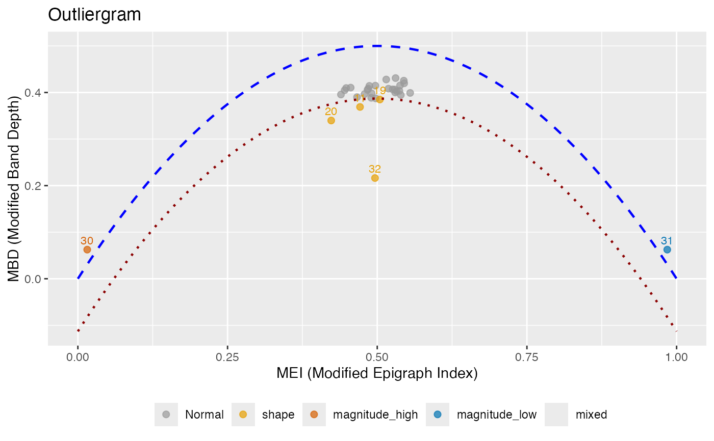

Creates an outliergram plot that displays MEI (Modified Epigraph Index) versus MBD (Modified Band Depth) for outlier detection. Points below the parabolic boundary are identified as outliers, and each outlier is classified by type.
Arguments
- fdataobj
An object of class 'fdata'.
- factor
Factor to adjust the outlier detection threshold. Higher values make detection less sensitive. Default is 1.5.
- mei_threshold
Threshold for classifying magnitude outliers based on MEI. Curves with MEI < mei_threshold or MEI > (1 - mei_threshold) are considered to have extreme magnitude. Default is 0.25.
- ...
Additional arguments (currently ignored).
Value
An object of class 'outliergram' with components:
- fdataobj
The input functional data
- mei
MEI values for each curve
- mbd
MBD values for each curve
- outliers
Indices of detected outliers
- outlier_type
Character vector of outlier types for each detected outlier: "shape", "magnitude_high", "magnitude_low", or "mixed"
- n_outliers
Number of outliers detected
- factor
The factor used for threshold adjustment
- parabola
Coefficients of the parabolic boundary (a0, a1, a2)
Details
The outliergram plots MEI on the x-axis versus MBD on the y-axis. For standard functional data, these values lie near a parabola. The theoretical relationship for uniformly distributed data is: $$MBD = a_0 + a_1 \cdot MEI + a_2 \cdot MEI^2$$
Points that fall significantly below this parabola are identified as outliers.
The factor parameter controls the sensitivity: lower values detect more
outliers.
Outlier Type Classification:
shape: Curves with unusual shape but typical magnitude (moderate MEI, low MBD). These curves cross other curves frequently.
magnitude_high: Curves shifted upward (high MEI, typically above most other curves).
magnitude_low: Curves shifted downward (low MEI, typically below most other curves).
mixed: Curves with both unusual shape and extreme magnitude (extreme MEI and low MBD).
References
Arribas-Gil, A. and Romo, J. (2014). Shape outlier detection and visualization for functional data: the outliergram. Biostatistics, 15(4), 603-619.
See also
depth for depth computation, magnitudeshape for
an alternative outlier visualization.
Examples
# Create functional data with different outlier types
set.seed(42)
t <- seq(0, 1, length.out = 50)
X <- matrix(0, 32, 50)
for (i in 1:29) X[i, ] <- sin(2 * pi * t) + rnorm(50, sd = 0.2)
X[30, ] <- sin(2 * pi * t) + 2 # magnitude outlier (high)
X[31, ] <- sin(2 * pi * t) - 2 # magnitude outlier (low)
X[32, ] <- sin(4 * pi * t) # shape outlier
fd <- fdata(X, argvals = t)
# Create outliergram
og <- outliergram(fd)
print(og)
#> Outliergram
#> ===========
#> Number of curves: 32
#> Outliers detected: 6
#>
#> Outlier types:
#> Shape: 4
#> Magnitude (high): 1
#> Magnitude (low): 1
#>
#> Outlier details:
#> Index 11 : shape
#> Index 19 : shape
#> Index 20 : shape
#> Index 30 : magnitude_high
#> Index 31 : magnitude_low
#> Index 32 : shape
#>
#> Parameters:
#> Factor: 1.5
#> MEI threshold: 0.25
plot(og, color_by_type = TRUE)
